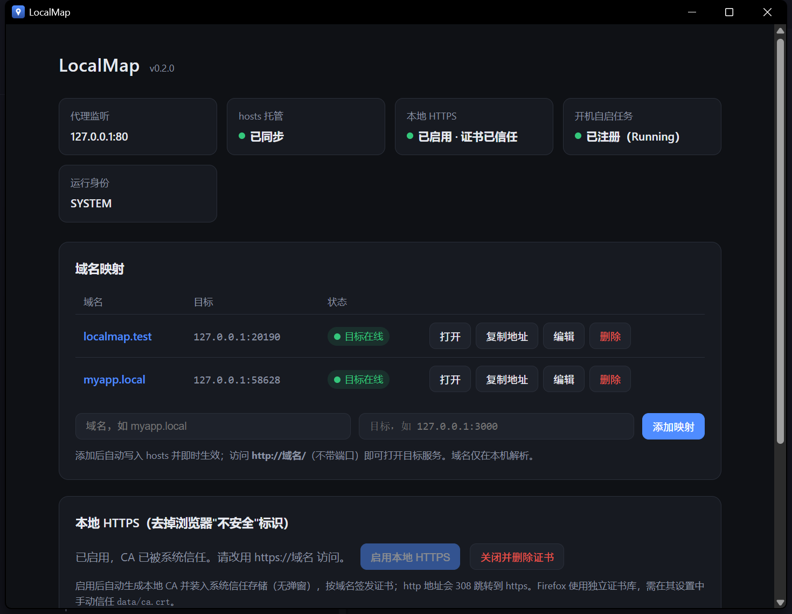

给本机端口一个像样的域名 —— Windows 本地域名映射管理工具

本地开发/自托管服务越多，这些琐事越烦人
58628 是什么？15173 又是什么？浏览器历史里一排 127.0.0.1:xxxx，每次都要翻半天。
要管理员权限、改完忘了清、残留条目越攒越多，哪行是哪来的完全不知道。
很多本地服务开了 Host 校验 / DNS-rebinding 防护，用自定义域名访问直接被拒，WebSocket 握手失败。
http 明文地址被浏览器打上"不安全"标记，看着难受，某些 API（剪贴板等）在非安全上下文还受限。
临时起的反向代理、临时改的 hosts，重启之后又要重新折腾一遍。
Caddy/nginx 能干这事，但要写配置、管进程、处理证书——为了一个域名映射，值吗？
一个常驻引擎 + 一个桌面 GUI，全部可视化，不再是黑盒
域名 ↔ 端口一表看清，增删改即时生效；桌面 app 一键"打开/复制地址"。
只写 # >>> LOCALMAP <<< 标记之间的区块，绝不动你其它条目；区块内容随时可查。
转发时把 Host 改写为目标地址、同源 Origin 改写为目标源，WebSocket/SSE 原生透传，403/401 消失。
自签 CA 装入系统信任存储（无弹窗），按域名自动签发证书，http 自动 308 跳转 https，"不安全"标识消失。
计划任务以 SYSTEM 身份常驻引擎（无窗口），重启后域名、HTTPS 全部自动恢复。
"关闭并删除证书"一键回滚：停 443、删系统 CA、删证书文件。计划任务也可一键删除。
本地工具的底线：不联网、不越权、可审计、可回滚
127.0.0.1 / localhost / localmap.test，拦截 DNS-rebinding 窃取 token。data/ 目录，一键即可从系统信任存储彻底删除。data/ca.crt。Chrome/Edge 无需任何操作。.local / .test 这类保留后缀，避免和真实域名冲突。